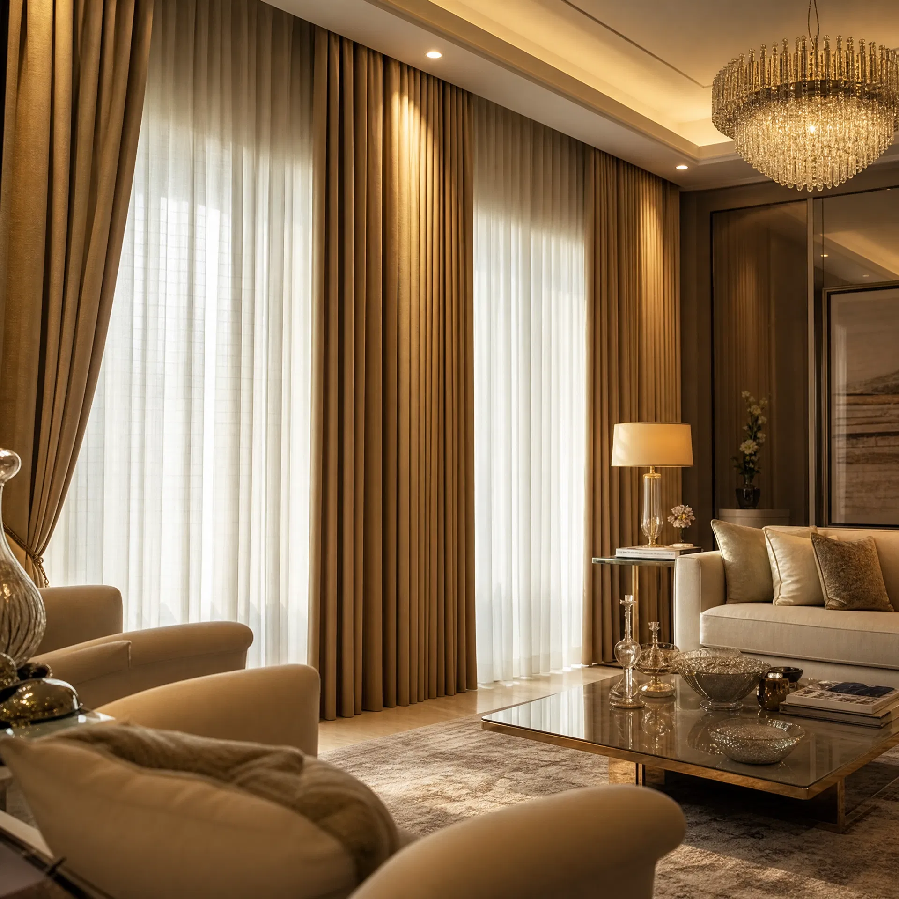

01 / 08
Cortinas Sob Medida
Personalizadas especialmente para você, nossas cortinas sob medida combinam elegância, funcionalidade e qualidade. Escolha entre diversos tecidos, cores e estilos.
- Confecção personalizada sob medida
- Ampla variedade de tecidos
- Cores e padrões exclusivos
- Instalação profissional incluída
- Garantia de qualidade e durabilidade